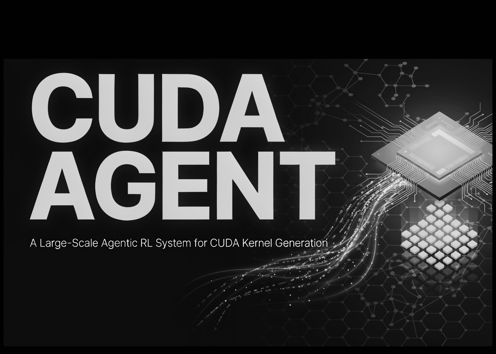

01 프론티어 & 사업 동향
구글, Gemini 3.7 Flash 가격 반값으로 내놨다
“3.7 Flash는 3.6 Flash보다 복잡한 문서 처리와 업무 자동화 평가에서 큰 폭으로 점수를 올렸다.”
Weekly AI Brief
이번 주 AI 업계는 모델 가격을 낮추고, 추론 속도를 높이고, 오픈웨이트 경쟁을 다시 밀어 올리는 흐름이 두드러졌습니다. 구글과 OpenAI, DeepSeek는 API 중심의 사용 비용과 응답 속도를 앞세웠고, Qwen과 GLM 계열은 성능 개선과 코딩 경쟁으로 오픈 모델 쪽 압박을 키웠습니다. 동시에 숨은 추론 블록에서 민감정보가 복원되고, 딥페이크 탐지기가 위기 영상에서 흔들린 연구가 나오면서 보안과 신뢰성 점검도 다시 앞에 섰습니다. 이번 주에는 더 싸고 빠른 모델 경쟁과 함께, 추론 과정의 노출 위험과 탐지 한계를 같이 봐야 합니다.

Editor's Pick
번호는 상세 아티클(첨부 이미지) 번호와 동일합니다
01 프론티어 & 사업 동향
“3.7 Flash는 3.6 Flash보다 복잡한 문서 처리와 업무 자동화 평가에서 큰 폭으로 점수를 올렸다.”
02 프론티어 & 사업 동향
“GPT-5.6 Sol on Ultrafast mode answered all 2,500 HLE questions in 11 hours and 11 minutes.”
04 오픈웨이트 & 오픈소스
“Qwen3.8-27B는 여러 코딩·에이전트 평가에서 이전 27B 계열보다 큰 폭으로 점수를 올렸다.”
대형 연구소의 모델 공개·프리뷰, 규제/정책, 파트너십 등 산업이 움직인 사건입니다.
01 Google DeepMind Blog 게시일 2026.08.13
“3.7 Flash는 3.6 Flash보다 복잡한 문서 처리와 업무 자동화 평가에서 큰 폭으로 점수를 올렸다.”
 01
0102 cerebras.ai 게시일 2026.08.13
“GPT-5.6 Sol on Ultrafast mode answered all 2,500 HLE questions in 11 hours and 11 minutes.”
 02
0203 openrouter.ai 게시일 2026.08.12
“같은 모델이라도 제공 사업자에 따라 지연 시간, 처리량, 가용성이 다르게 나타났다.”
 03
03오픈웨이트 모델과 GitHub/Hugging Face 생태계에서 주목할 프로젝트입니다.
04 Hugging Face · qwen 게시일 2026.08.14
“Qwen3.8-27B는 여러 코딩·에이전트 평가에서 이전 27B 계열보다 큰 폭으로 점수를 올렸다.”
 04
0405 z.ai 게시일 2026.08.14
“GLM-5.3은 코딩·장기 작업 성능을 크게 강조한 주요 공개로, 대형 오픈 모델 경쟁의 핵심 사건이다.”
 05
0506 MarkTechPost 게시일 2026.08.18
“프로파일링 샌드박스만으로도 128 NVIDIA H20 GPUs를 썼다.”

06논문·벤치마크·기법 연구 중 실무 관점에서 볼 만한 결과입니다.
07 stolen-thoughts.com 게시일 2026.08.11
“704개 민감정보 중 64개는 보이는 대화에는 없고 추론 블록 안에만 있었다.”
 07
07 08
08개발 도구, 인프라, 보안 이슈 등 바로 써먹거나 조심해야 할 소식입니다.
09 DeepSeek 게시일 2026.08.13
“개발자는 DeepSeek Harness 소스 코드를 바꾸지 않고 설정만으로 기능을 고르거나 교체하거나 확장할 수 있다.”
 09
0910 The New Stack 게시일 2026.08.11
“LangChain은 145개 멀티턴 Deep Agents 작업에서 프런티어 모델 호출을 7%만 쓰도록 라우팅해 비용을 74% 낮췄다.”
 10
10